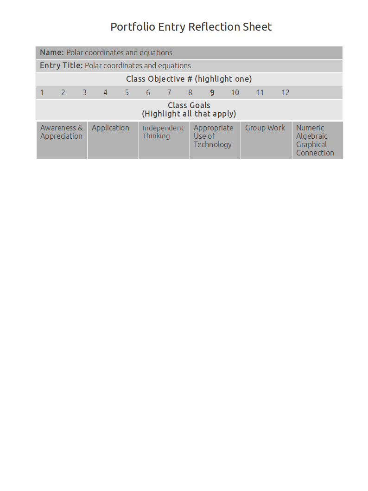
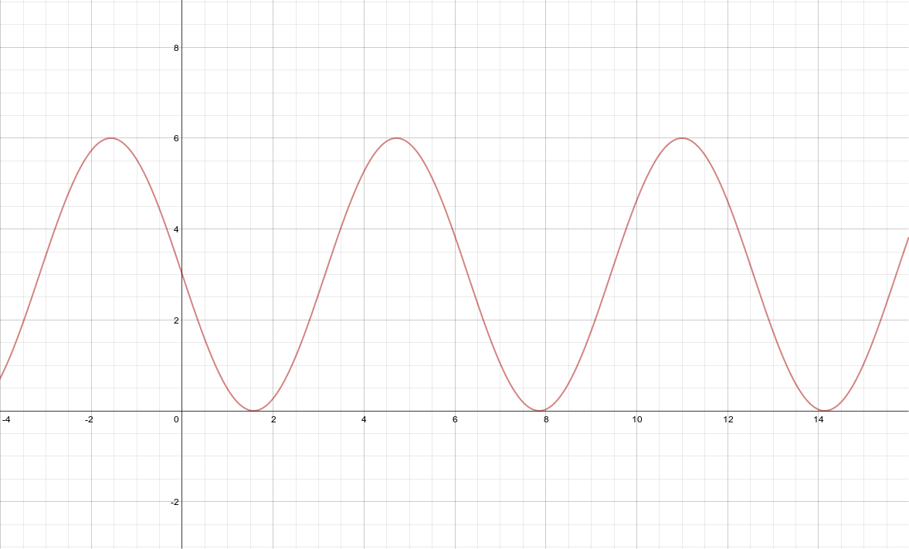

Polar Coordinates And Equations

How to graph polar coordinates
Source:
Explanation:
This artifact demonstrates how to graph polar coordinates.
In the polar coordinate \(P(2, { \pi \over 3})\), the directed distance is 2, and the directed angle is \(\pi \over 3\).
So the pole starts at 2 on the O ray, and swivels out by \(\pi \over 3\) degrees.
Artifact:
Plot the point \(P(2, { \pi \over 3})\)
Converting polar coordinates to rectangular coordinates and rectangular to polar
Source: Notes, Section 6.4 example 3A
Explanation:
This artifact demonstrates converting polar coordinates to rectangular coordinates and rectangular to polar.
- In this example I use the equation \(r^2 = x^2 + y^2\) to solve for the directed distance (x) and \(tan^{-1}({y \over x})\) to solve for the directed angle (y).
- In this example I use the formulas \(x = r \cos \theta \text{ and } y = r \sin \theta\), and my knowledge of the unit circle, to calculate the approximate values of x and y.
Artifact:
- Convert the rectangular coordinate (2,7) into a polar coordinate.
\(r = \sqrt{2^2 + 7^2} = \sqrt{53}\\
tan^{-1}({7 \over 2}) = 74^\circ\)
Polar coordinate = \((\sqrt{53}, 74^\circ)\)
- Convert the polar coordinate \((3, {5\pi \over 6})\) into a rectangular coordinate.
\(x = r \cos \theta\\
x = 3 \cos {5 \pi \over 6}\\
x = 3(-{\sqrt{3} \over 2}) \approx -2.60\)
\(y = r \sin\theta\\
y = 3 \sin {5 \pi \over 6}\\
y = 3({1 \over 2}) \approx 1.5\)
Rectangular coordinate = \((-2.60, 1.5)\)
Converting polar equations to rectangular equations and rectangular to polar
Source: Section 6.4 Example 5 and Example 6
Explanation:
This artifact demonstrates converting polar equations to rectangular equations and rectangular to polar.
\(r^2 = x^2 + y^2\\
x = r \cos \theta\\
y = r \sin \theta\)
- Here I simplify \(r = 4 \sec \theta\) into \(r \cos \theta\) so I can substitute for \(x\) using the formula \(x = r \cos \theta\). The answer is the line \(x = 4\).
- Here I simplify the original equation into x’s and y’s in both the second and first degree because I can subsitute them with the conversion formulas \(\\x = r \cos \theta \text{ and } y = r \sin \theta\) to convert them from rectangular form into polar form.
Artifact:
- Convert \(r = 4 \sec \theta\) to rectangular form.
\[r = 4 \sec \theta\]\[{r \over \sec \theta} = 4\]\[r \cos \theta = 4\]\[x = 4\]
- Convert \((x-3)^2 + (y-2)^2 = 13\) to polar form.
\[(x-3)^2 + (y-2)^2 = 13\]\[x^2 - 6x + 9 + y^2 -4y + 4 = 13\]\[x^2 + y^2 -6x -4y = 0\]\[r^2 - 6r \cos \theta -4r \sin \theta = 0\]\[r(r - 6 \cos \theta - 4 \sin \theta) = 0\]\[r = 0 \text{ or } r - 6 \cos \theta - 4 \sin \theta = 0\]
Graphs of polar equations
Source: Section 6.5 Example 5
Explanation:
This artifact demonstrates graphs of polar equations.
From graphing the polar equation \(r = 3 -3 \sin x\) in radian/function mode, I can tell that the maximum r value is 6 because that is the highest y valu you can ever get on this particulur sinusoid.

The rest of the information can be gathered visually.
Artifact:
Analyze the graph of \(r = 3 -3 \sin \theta\).
Domain: All real numbers
Range: [0, 6]
Symmetric about the y-axis
Maximum r-value = 6